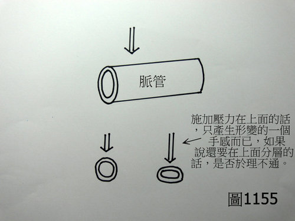
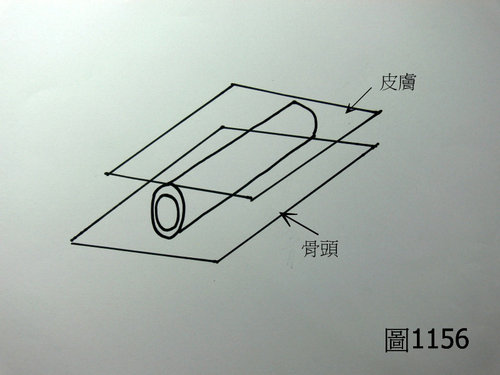
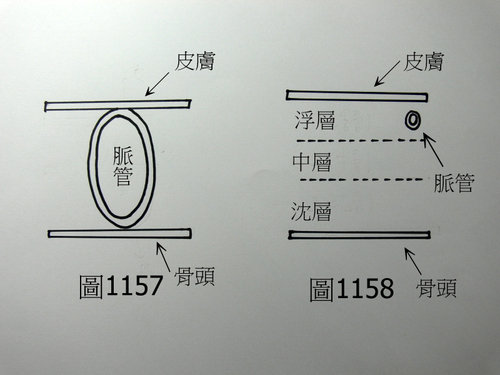

問答錄 223：把脈分不分層的問題
作者：陳建元
老師你好，我是學物理的，根據物理學上的原則，脈管像一條水管，當施加壓力在上面的時候，只是產生形變而已（形狀上的變化），如〈圖1155〉，當施壓力在上面的時候，只是產生形變的一個手感而已，像脈管那麼細的東西，如果還要再分層的話，應該是不太可能，那你為什麼會說脈管要分層呢？



答：雖是學物理的，但是生理學和醫學也是要學啊，否則只會張冠李戴，中醫自古以來，歷代數百個可以為代表的醫學家，從來沒有人跟您講要在一條脈管上面去分層， 也沒有人去那樣做，事實上，會在一條脈管上面再分層的，您很有可能是史上第一人；人體腕部的皮層和骨頭之間的橈動脈，並不是長像〈圖1156〉〈圖1157〉那個樣子，而是長像〈圖1158〉那個樣子，解剖圖可參考第 26.0 條，自古歷代醫家在說的分層，是指皮膚與骨頭之間必須分層來看待，這是因為生病或不生病的時候，脈管所處的脈位是不一樣的，當脈管處於浮層的時候，有浮層的病理意義或是生理意義，而當脈管處於沉層的時候，有沉層的病理意義或是生理意義，研究這些脈管所處的脈位高低、脈管跳動的頻率快慢、脈管的軟硬、脈管的外形……，所代表的病理意義或生理意義的，即是所謂的「脈學」，而這個脈學的系統建立的很早，從《內經》時代就已經建構出一個很可觀的架構了，《內經》有1/3講到脈學、《傷寒》有1/3講到脈學、《難經》有1/2講到脈學，脈學是整個中醫的主體架構。
【引用請先來信告知徵求同意，若有涉及販售營利等商業行為，版權所有拷貝盜用必究。】
【藥王脈學講壇】http://blog.xuite.net/drjychen/twblog